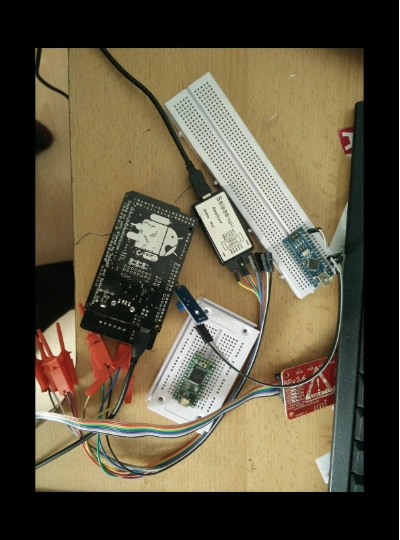
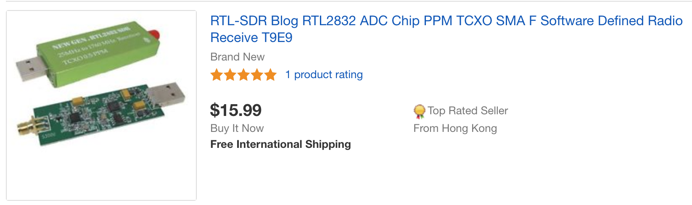
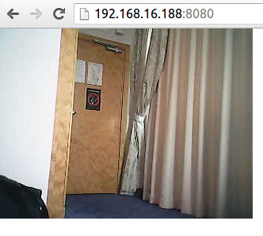
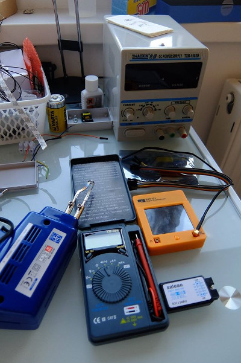
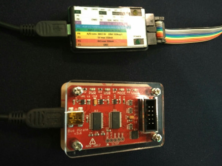
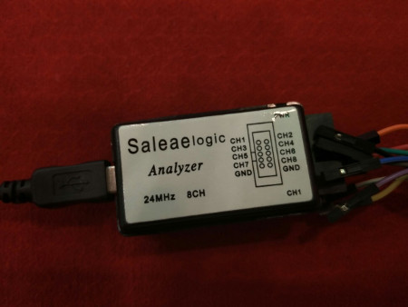
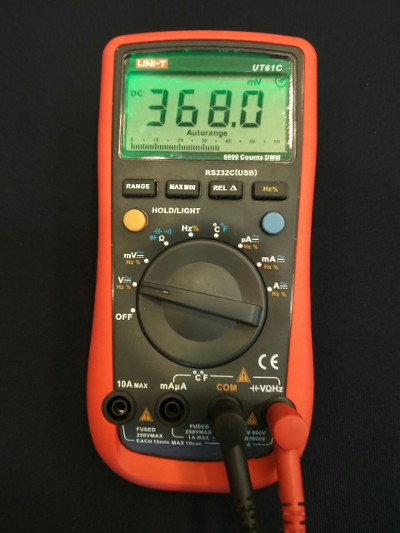
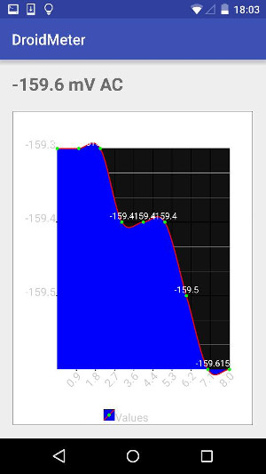

IoT Security
Users perspective
Vlatko Kosturjak (@k0st) Zagreb, 16th of May, 2019
Agenda
- Introduction
- Internet of Things
- Risks
- Hardware communication
- Accessory Development Kit (ADK)
- Demos
- Summary
- Questions and answers
60 minutes
Kost: About me
- Security Consultant in Diverto
- offensive/penetration tester
- Linux and FLOSS enthusiast
- Open source developer
- Have code in OpenVAS, Nmap, Metasploit, ...
- https://github.com/kost
- Implemented smart home
- home automation
- market available components
...in pictures

Internet of Things?
simply the point in time when more 'things or objects' were connected to the Internet than people
IoT
- Internet of Things
- "Internet for things"
- MIT lab in 1999
- Research papers
- 2002 - Finland
- Cisco
- things/people ratio = 0.08 in 2003
- born" between 2008 and 2009
- things/people ratio = 1.84 in 2010.
IoT devices
- Consumer
- Smart Home, Elder care, ...
- Commercial
- Medical, Healthcare, Transportation, ...
- Industrial
- Manufacturing, Agriculture, ...
- Infrastructure
- Energy management, Environment monitoring, ...
What about risks?
- Risks
- Resource hijaacking
- Data Harvesting/Spying
- Pivot Point
- Decision on bad input
- ...
- Impact
- Internet not working
- Higher Electricity bill
- Access to your network
- Safety issues
- ...
Mirai
- 2016
- breached network routers/cameras
- default passwords
- old Linux kernel
- DDoS
- Etsy, GitHub, Netflix, Shopify, SoundCloud, Spotify, Twitter, ...
Cold November in Finland
- November 2016
- heating in two buildings in Lappeenranta, Finland
- no monitoring
- DDoS heating controllers to continually reboot the system
Brickerbot
- similar to mirai
- bricking devices
- overwriting flash memory
Thermostat - case study
Communication
- Internet
- Encryption
- Authentication
- Wireless
- 2.4 / 5 Ghz (Wireless)
- Zigbee (2.4)
- 433 Mhz
- 800 Mhz
- ...
433 MHz data
{"time" : "2019-03-22 06:50:34", "model" : "inFactory sensor", "id" : 67, "temperature_F" : 45.000, "humidity" : 54}
{"time" : "2019-03-22 06:49:06", "model" : "Prologue sensor", "id" : 9, "rid" : 176, "channel" : 1, "battery" : "LOW", "button" : 0, "temperature_C" : 169.600, "humidity" : 183}
{"time" : "2019-03-22 06:49:08", "model" : "AlectoV1 Rain Sensor", "id" : 5, "channel" : 0, "battery" : "OK", "rain_total" : 6.750, "mic" : "CHECKSUM"}
{"time" : "2019-04-06 17:59:10", "model" : "AlectoV1 Wind Sensor", "id" : 164, "channel" : 1, "battery" : "OK", "wind_speed" : 0.000, "wind_gust" : 0.000, "wind_direction" : 225, "mic" : "CHECKSUM"}
{"time" : "2019-03-22 06:49:21", "model" : "Springfield Temperature & Moisture", "sid" : 23, "channel" : 3, "battery" : "LOW", "transmit" : "MANUAL", "temperature_C" : -204.800, "moisture" : 0, "mic" : "CHECKSUM"}
{"time" : "2019-03-22 16:04:21", "model" : "Akhan 100F14 remote keyless entry", "id" : 174745, "data" : "0x2 (Unlock)"}
TPMS
{"time" : "2019-05-01 03:27:17", "model" : "Toyota", "type" : "TPMS", "id" : "f2a2a90e", "status" : 128, "pressure_PSI" : 33.000, "temperature_C" : 12.000, "mic" : "CRC"}
{"time" : "2019-05-10 17:45:45", "model" : "Ford", "type" : "TPMS", "id" : "001b29fe", "code" : "88481e", "mic" : "CHECKSUM"}
{"time" : "2019-05-10 16:19:19", "model" : "Schrader", "type" : "TPMS", "flags" : "04", "id" : "099C654", "pressure_kPa" : 277.500, "temperature_C" : 25.000, "mic" : "CRC"}
{"time" : "2019-05-10 17:43:18", "model" : "Renault", "type" : "TPMS", "id" : "b72eba", "flags" : "36", "pressure_kPa" : 186.750, "temperature_C" : 21.000, "mic" : "CRC"}
{"time" : "2019-03-22 08:58:14", "model" : "Schrader Electronics EG53MA4", "type" : "TPMS", "flags" : "4d930020", "id" : "046433", "pressure_bar" : 2.275, "temperature_F" : 70.000, "mic" : "CHECKSUM"}
{"time" : "2019-04-21 02:10:43", "model" : "Citroen", "type" : "TPMS", "state" : "c2", "id" : "0f39e17e", "flags" : 12, "repeat" : 2, "pressure_kPa" : 280.984, "temper
ature_C" : 22.000, "maybe_battery" : 14, "mic" : "CHECKSUM"}
RTL SDR
Wireless
- Frequency
- 2.4 Ghz
- 5 Ghz
- Standard wireless thing
- Access Point
- STA / clients
- ad hoc*
- mesh*
Useful wireless tools for reversing
- Obtaining
- Kismet
- Aircrack-ng suite
- tcpdump on device
- Analysing
- wireshark
- tshark
- moloch (heavy duty!)
- pcap bindings for your favourite language
- good hex editor and calculator
Daugther was crazy about RC cars

Hmm. Let's see what is inside

It's daddy toy

How it works?
- Car is actually Wireless Access Point
- Open wireless network with specific SSID
- Mobile client connects to the wireless network
- Typical TCP/IP
- different TCP ports for different functions
- Does it blend?
- Haven't tried :)
Open wireless camera
Security/Privacy considerations
- Open Wireless Access Point
- No protection on network/application level
- No password
- No encryption
- No authentication
- We're in era where toys can spy on us
- Get into business with camera covers for toys!
Basic hardware kit needed
Links on AliExpress/Bangood
- Laziness - thanks Ivan Voras
- Soldering: http://goo.gl/ePG7Ni
- Voltmeter: http://goo.gl/J57z7N
- Osciloscope: http://goo.gl/HKuCbP
- Logic probe: http://goo.gl/rbWxJS
- Power source: http://goo.gl/76dPqO
- Arduinos: http://goo.gl/63pTE2
Useful hardware devices
- Beside that - recommended
- BusPirate
- TTL serial cable
- Actually you don't need TTL
- if you have BusPirate
Bus Pirate
Logic Analyzer
Multimeter
Multimeter communication analysis
- Multimeter have serial communication
- Basic serial communication reversing
- Looking at the product specification
- Looking at the similar products specs
- If not, basic baud rate "brute" guessing
- as well as other parameters (stop bit, etc)
- Getting as much communication as possible
- how it looks like in different states
- find patterns and differences
Security considerations
- Again, it's quite open
- No password
- No encryption
- No authentication
- But this time
- it's not wireless, only wired serial
- Know your threat model!
Multimeter communication
- Only receive serial communication
- Serial communication
- 2400 bps
- 8 bits
- 1 stop bit
- No Parity
- Packet pattern
- 14 byte packets with 0D0A on the end
- First few bytes - the value, other bit flags
Multimeter Android App
- What if I can get readings on Android
- Features
- get nice graph (1 channel logic analyzer)
- export values to CSV
- take picture with camera on spike (with OSD)
- write values in EXIF and OSD
- Proof of concept
- Android App using mik3y serial library
- Drawing graphs using Android Plot
Multimeter App PoC
Recommendations
- Do not directly expose on Internet
- high port
- VPN/SSL
- Network isolation
- Auto update
- Change password to stronger
- Double think about automation source
- relying on multiple sources
- Secure disposal
- credentials in device
Summary
- IoT will not disappear
- Risks
- Resource hijaacking
- Data Harvesting/Spying
- Pivot Point
- Recommendations
- narrowing attack surface
- configuration hardening